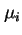
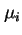
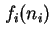

Next: ตัวอย่าง:
Up: เครือข่ายคิว
Previous: ระบบเครือข่ายคิวแบบผสม:
Contents
Index
ระบบเครือข่ายคิวอย่างง่ายที่สุดประกอบด้วย คิวที่มีเครื่องบริการเดี่ยวจำนวน  เครื่องต่ออนุกรมกัน โดยมีอัตราการเข้าใช้บริการ และอัตราความสำเร็จ กระจายแบบ Exponential ดังแสดงในรูป 6.4 งานที่ออกจากคิวหนึ่งจะต่อคิวต่อไปทันที เราสามารถแสดงได้ว่า แต่ละคิวที่ต่ออนุกรมกันอยู่สามารถทำการวิเคราะห์แยกจากกันได้ แต่ละคิวจะมีอัตราการเข้าใช้บริการ และอัตราความสำเร็จเท่ากับ
เครื่องต่ออนุกรมกัน โดยมีอัตราการเข้าใช้บริการ และอัตราความสำเร็จ กระจายแบบ Exponential ดังแสดงในรูป 6.4 งานที่ออกจากคิวหนึ่งจะต่อคิวต่อไปทันที เราสามารถแสดงได้ว่า แต่ละคิวที่ต่ออนุกรมกันอยู่สามารถทำการวิเคราะห์แยกจากกันได้ แต่ละคิวจะมีอัตราการเข้าใช้บริการ และอัตราความสำเร็จเท่ากับ  และมีค่า  เป็นอัตราการบริการของแแต่ละคิว
และมีค่า  เป็นอัตราการบริการของแแต่ละคิว
ค่าความน่าจะเป็นของความยาวคิวที่คิวต่างๆ สามารถคำนวณได้จากการคูณค่าความน่าจะเป็นของแต่ละคิว
เครือข่ายคิวดังกล่าวเรียกว่าเป็นเครือข่าย Product Form ซึ่งสามารถเขียนอยู่ในรูปทั่วไปได้ ดังต่อไปนี้
เมื่อ  เป็นฟังก์ชั่นของจำนวนงานที่คิว  ,
,  เป็นค่าคงที่ซึ่งเป็นฟังก์ชั่นของจำนวนงานทั้งหมดในระบบ
เป็นค่าคงที่ซึ่งเป็นฟังก์ชั่นของจำนวนงานทั้งหมดในระบบ
Figure 6.4:
ระบบเครือข่ายคิวที่มีเครื่องบริการเดี่ยวจำนวน - เครื่องต่ออนุกรมกัน
เครื่องต่ออนุกรมกัน
|
|
Subsections
Vara Varavithya
2002-03-09